Sunny Acres: current renderer audit
Actual unchanged runtime d5ed6a96c50914320f30a7b74b799b7f66a9b6e0. Existing testfarm sandbox, normal full composer, declared Lilita One/Nunito fonts, RTX 5060 Ti D3D11. Mobile-sized touch emulation on this PC. Best quality, DPR 1. Accepted animals untouched. No generated concept, proposed change, phone test or performance acceptance is shown.
Review priority: quiet the busy ground and improve soil/path transitions in the barn-and-fields scene. Existing lighting, barn, crops, controls and animals are retained for the proposed first pass. Proposal/report · Exact camera/counter/font metadata
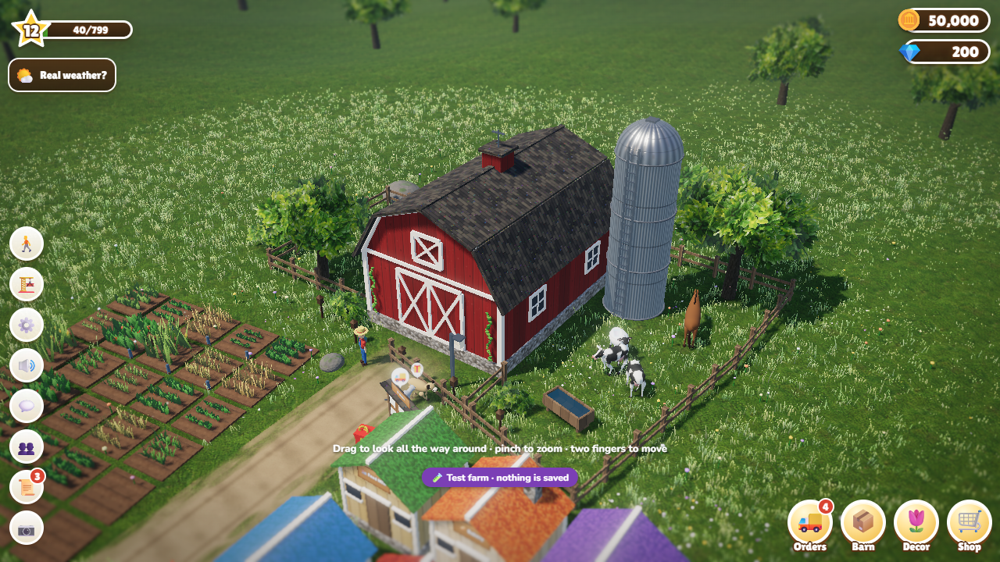
desktop-classic-noon-default.png
1280 × 720, DPR 1 · classic · noon
Full composer 546 calls / 1,186,179 triangles. Snapshot, no FPS claim.
 desktop-classic-noon-courtyard.png
desktop-classic-noon-courtyard.png
1280 × 720, DPR 1 · classic · noon
Full composer 519 calls / 1,183,695 triangles. Snapshot, no FPS claim.
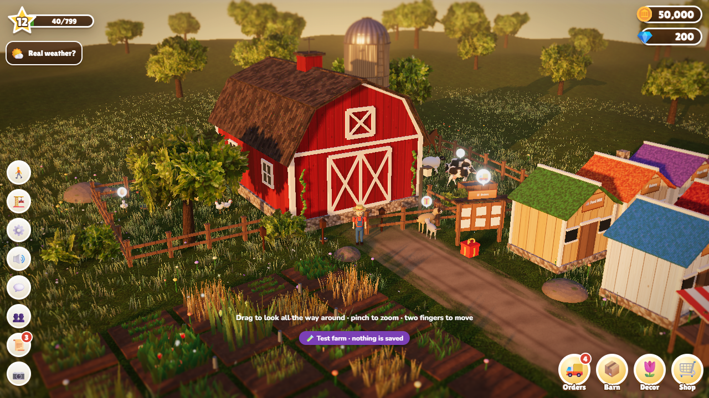
desktop-classic-golden-courtyard.png
1280 × 720, DPR 1 · classic · golden
Full composer 530 calls / 1,186,979 triangles. Snapshot, no FPS claim.
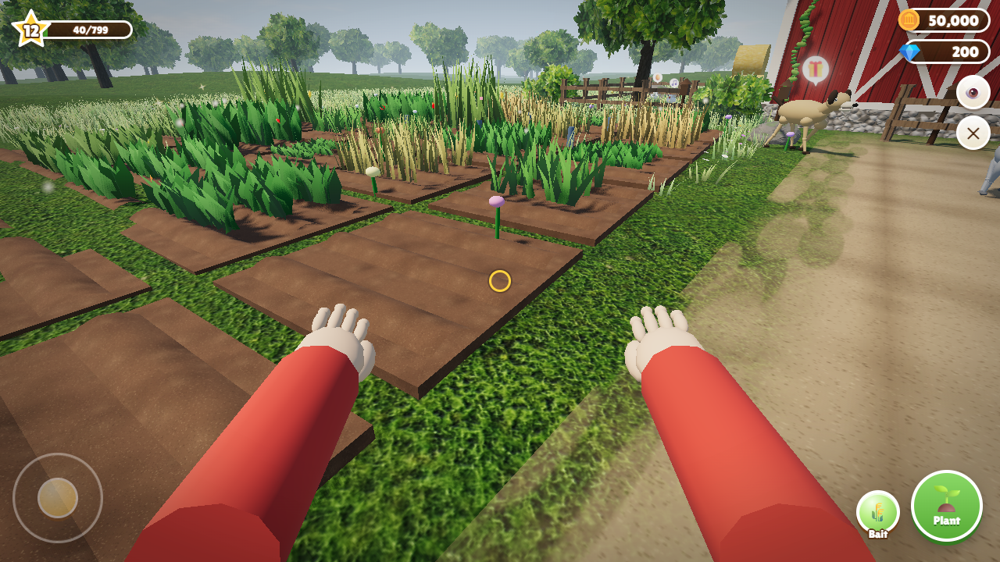
desktop-walk-noon-path.png
1280 × 720, DPR 1 · walk-first-person · noon
Full composer 446 calls / 1,109,989 triangles. Snapshot, no FPS claim.
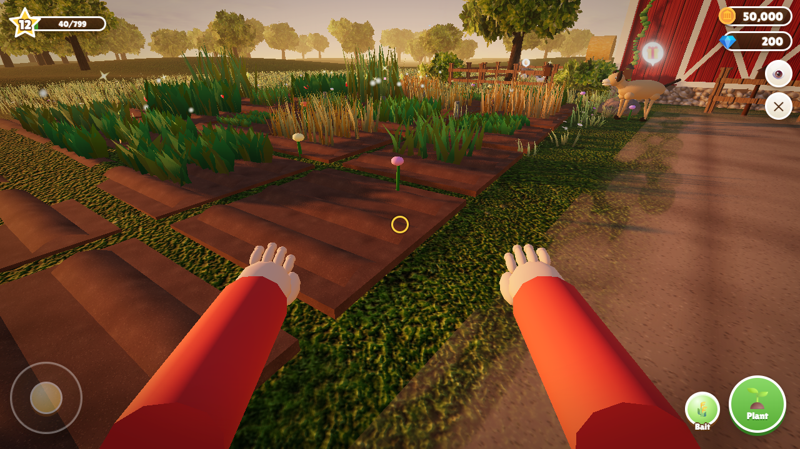
desktop-walk-golden-path.png
1280 × 720, DPR 1 · walk-first-person · golden
Full composer 471 calls / 1,142,389 triangles. Snapshot, no FPS claim.
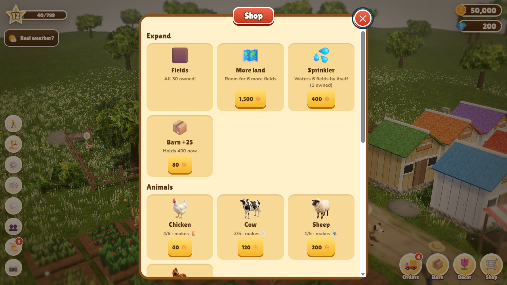
desktop-shop-noon.png
1280 × 720, DPR 1 · classic · noon
Full composer 523 calls / 1,183,703 triangles. Snapshot, no FPS claim.
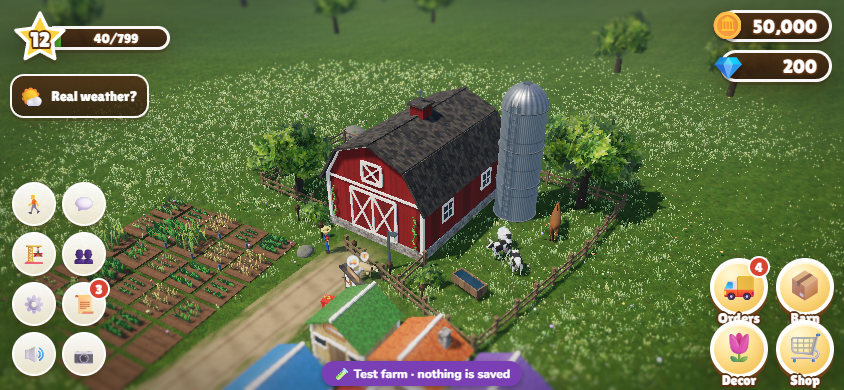
mobile-844-classic-noon-default.png
844 × 390, DPR 1 · classic · noon
Full composer 556 calls / 1,187,601 triangles. Snapshot, no FPS claim.
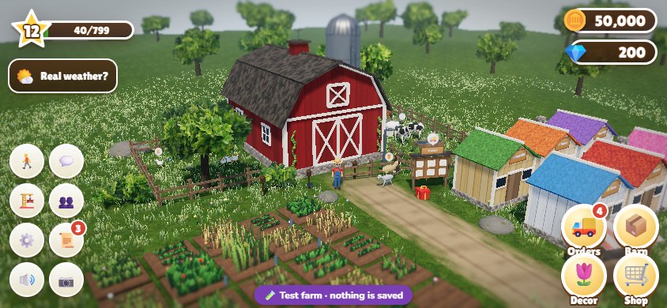
mobile-844-classic-noon-courtyard.png
844 × 390, DPR 1 · classic · noon
Full composer 523 calls / 1,183,789 triangles. Snapshot, no FPS claim.
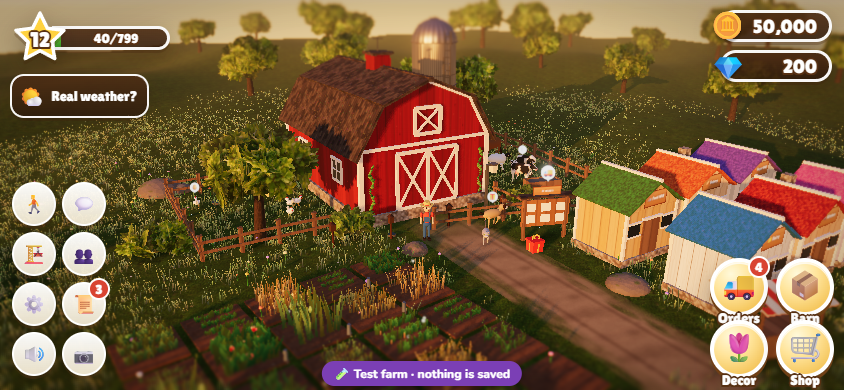
mobile-844-classic-golden-courtyard.png
844 × 390, DPR 1 · classic · golden
Full composer 533 calls / 1,187,071 triangles. Snapshot, no FPS claim.
 mobile-844-walk-noon-path.png
mobile-844-walk-noon-path.png
844 × 390, DPR 1 · walk-first-person · noon
Full composer 454 calls / 1,113,327 triangles. Snapshot, no FPS claim.
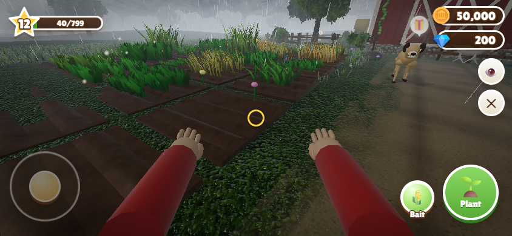
mobile-844-walk-rain-path.png
844 × 390, DPR 1 · walk-first-person · rain
Full composer 461 calls / 1,138,303 triangles. Snapshot, no FPS claim.
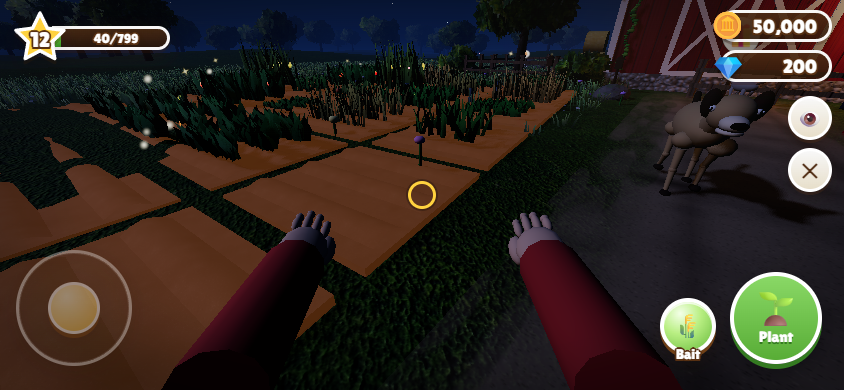
mobile-844-walk-night-path.png
844 × 390, DPR 1 · walk-first-person · night
Full composer 474 calls / 1,146,287 triangles. Snapshot, no FPS claim.
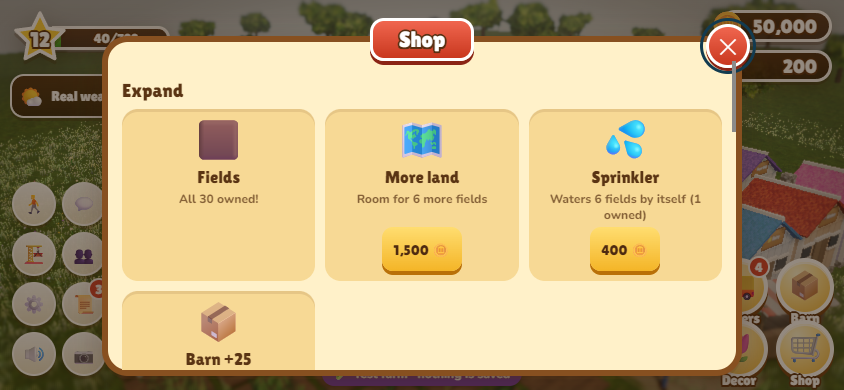
mobile-844-shop-noon.png
844 × 390, DPR 1 · classic · noon
Full composer 536 calls / 1,183,815 triangles. Snapshot, no FPS claim.
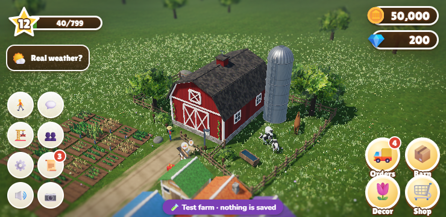
mobile-740-classic-noon-default.png
740 × 360, DPR 1 · classic · noon
Full composer 555 calls / 1,187,599 triangles. Snapshot, no FPS claim.
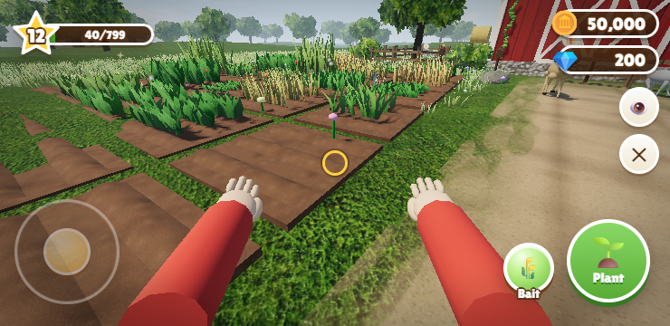
mobile-740-walk-noon-path.png
740 × 360, DPR 1 · walk-first-person · noon
Full composer 449 calls / 1,113,295 triangles. Snapshot, no FPS claim.